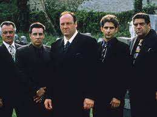
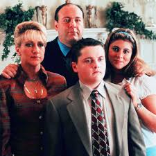
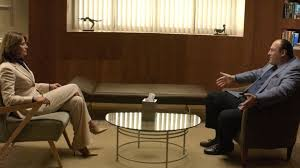
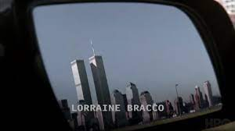
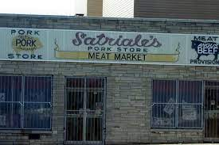
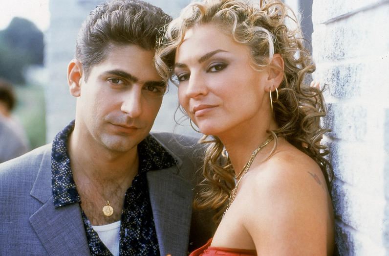
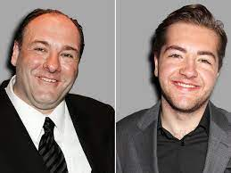

An image of Tony with some of his most trusted "asssociates"

Tony and his family in their New Jersey home

Tony in a room with his therapist

An image of the Twin Towers in the opening sequence

Satriale's, a deli used as a front by the Sopranos

Many of the most notable members of the Sopranos crime family

"Christofa" and Adrianna, two of the characters from the show
